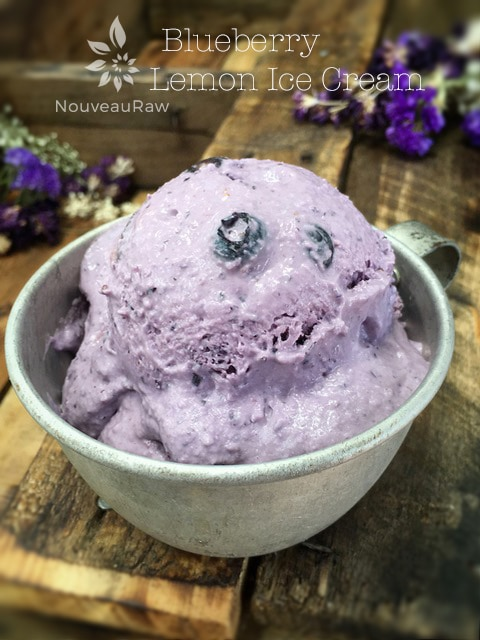
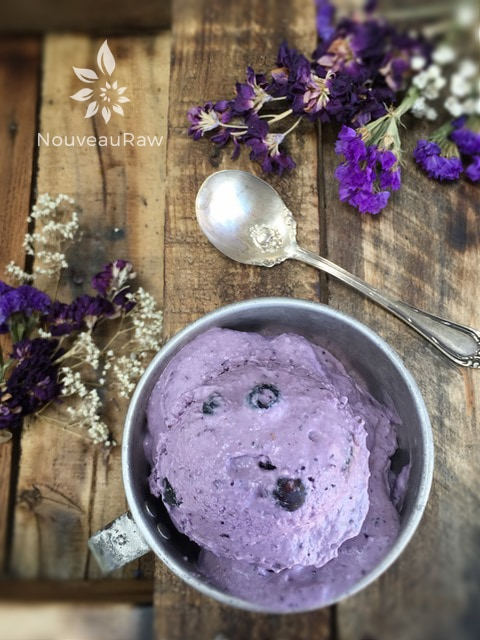

Blueberry Lemon Ice Cream
~ raw, vegan, gluten-free ~
If you love blueberries and if you love ice cream, you just might like this Blueberry Lemon Ice Cream. The great thing, well one of the many great things about this recipe is that you don’t need to feel guilty for indulging in it. It is made of pure, nutritious, and delicious ingredients.
As you read through the ingredient list, you will notice that I used three different sweeteners. I do this often, and reasoning is because each sweetener adds a different level of sweetener and flavor.
Agave or maple syrup adds a brighter flavor of sweetener. Whereas, the yacon and honey bring in a deeper, more rich flavor. You can certainly mix things up and use any sweetener that you are comfortable with.
I do recommend a liquid sweetener but if you are hard-pressed to use a dry one, be sure to grind it to a powder first. That way the ice cream batter won’t be grainy.
When shopping for blueberries, don’t be afraid to ask your produce guy (or gal) if you can taste test them before making a purchase. I have made it home with some pretty disappointing berries. If they blueberries lack in flavor, so will the ice cream.
And please, if at all possible, purchase them organic. Berries are high on the Dirty Dozen list. This just means that they are highly susceptible to absorbing pesticides. If you can’t get fresh organic blueberries, check out the frozen section. I have had great luck in finding frozen organic ones, and that is wiser purchase than fresh conventionally grown berries. I hope you enjoy this refreshing summertime treat. Many blessings, amie sue
yields 6 cups batter
- 2 3/4 cups raw Brazil or almond milk
- 2 1/2 cups Young Thai coconut meat
- 1/3 cup raw agave nectar or maple syrup
- 1 Tbsp raw yacon syrup
- 1 Tbsp raw honey
- 2 tsp vanilla extract or 1 vanilla bean pod, seeds only
- 2 Tbsp raw cold-pressed coconut oil
- 1/4 tsp Himalayan pink salt
- 2 cup frozen blueberries, thawed
- 1 cup Lemon Vanilla Frosting
Preparation:
- In a high-speed blender, combine the milk, coconut, sweeteners, vanilla, coconut oil, salt, blueberries, and frosting. Blend until nice and creamy.
- Due to the volume and the creamy texture that we are going after, it is important to use a high-powered blender. It could be too taxing on a lower-end model.
- Blend until the filling is creamy smooth. You shouldn’t detect any grit. If you do, keep blending.
- This process can take 2-4 minutes, depending on the strength of the blender. Keep your hand cupped around the base of the blender carafe to feel for warmth. If the batter is getting too warm. Stop the machine and let it cool. Then proceed once cooled.
- Place the blender carafe in the fridge or freezer for 1 hour.
- If chilled in the fridge it can stay there for up to 8 hours. But don’t leave in the freezer for more than an hour or it will freeze solid.
- Once chilled pour the batter into the ice cream maker and follow the manufacturer’s instructions.
- Just before the ice cream machine is done running, additional whole blueberries if desired.
- It is best to take the ice cream out of the freezer for about 10 minutes ahead of time, so it can have a chance to soften.
- Eat within 1 month.
Freezing Suggestions for Ice Cream:
- Use an ice cream machine. Follow the manufacturer’s directions.
- Freeze in popsicle molds or 3 oz Dixie cups with a popsicle stick inserted.
- Pour ice cream into a freezer-safe container and occasionally stir as it freezes.
-
- Store the ice cream in the very back of the freezer, as far away from the door as possible. Every time you open your freezer door you let in warm air. Keeping ice cream way in the back and storing it beneath other frozen-sold items will help protect it from those steamy incursions.
- Ice cream is full of fat, and even when frozen, fat has a way of soaking up flavors from the air around it—including those in your freezer. To keep your ice cream from taking on the odors, use a container with a tight-fitting lid. For extra security, place a layer of plastic wrap between your ice cream and the lid.
- To soften in the refrigerator, transfer ice cream from the freezer to the refrigerator 20-30 minutes before using it. Or let it stand at room temperature for 10-15 minutes.
- For more tips on making raw ice cream, click (here).


© AmieSue.com